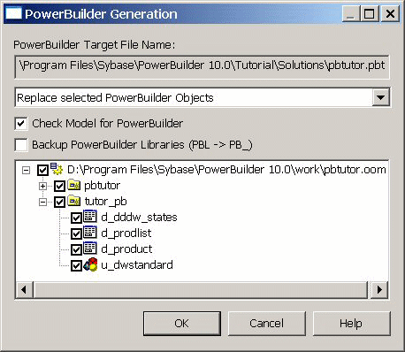

Previous Next
Class diagram menu commands
Main menu items
Menu items in the OOM plug-in interface also help to integrate
PowerDesigner with PowerBuilder. The PowerDesigner menu items do
not display in PowerBuilder unless a class diagram painter has focus.
The following table lists menu items that display when a class diagram
has focus.
Table 4-2: PowerDesigner menu items that
display for a class diagram
| Plug-in menu |
PowerDesigner menu items added |
|---|
| File |
The Page Setup, Print Preview, and Print
Selection menu items are added for a class diagram. The Print, Save,
and Save As menu items are used by PowerBuilder objects
or plug-in class diagrams, depending on which painter has the focus. |
| Edit |
All items from the PowerDesigner Edit
menu. |
| View |
All items from PowerDesigner View menu
except the Browser, Output, and Result List menu items. In the plug-in, the
View>Diagram>New Diagram cascading menu items
are visible but not enabled. |
| Model |
All items from the PowerDesigner Model
menu. |
| Symbol |
All items from the PowerDesigner Symbol
menu. |
| Language |
Only the Edit Current Object Language
and Generate PowerBuilder menu items. |
| Repository |
All items from the PowerDesigner Repository
menu. |
| Tools |
The Check Model, Compare Model, Merge
Model, Execute Commands>Edit/Run Script,
Display Preferences, General Preferences, and Model Options menu
items. Menu items for the PowerBuilder Tools menu are not removed when
a class diagram painter has focus. |
Menu items in the File, Run, Window, and Help menus remain
the same whether a PowerBuilder object painter or a plug-in class
diagram has focus.
Generating PowerBuilder objects
You can generate a PowerBuilder target from an OOM by selecting
Generate PowerBuilder from the OOM Language menu. The Language menu
is visible only if a class diagram is displayed and has focus.
The Generate PowerBuilder menu item opens the PowerBuilder
Generation dialog box, displayed in Figure 4-4. This dialog box prompts you to select packages
and classes to generate a PowerBuilder target. All PowerBuilder painters
must be closed before you click OK to generate the PowerBuilder target
from the OOM.
Figure 4-4: PowerBuilder Generation dialog
box

The PowerBuilder Generation dialog box allows you to select
how changes to the OOM will affect an existing PowerBuilder target
when you regenerate the target. The options are:
- Replace
selected PowerBuilder objects (default)
- Replace selected PowerBuilder libraries and objects
- Replace existing PowerBuilder target
If the OOM is not already linked to an existing PowerBuilder
target, you have only one option when generating the target:
- Create a new PowerBuilder target
By selecting the Check Model for PowerBuilder check box, you
can verify the validity of the model. You can also select a check
box to back up existing PowerBuilder libraries before the generation.
(This check box is grayed when a PowerBuilder target is not already
linked to the current OOM.) Existing PBLs
are saved in their original directories with the extension PB_.
If you are generating a PowerBuilder target for the first time,
you can select which package in the OOM should be used to generate
the target application.
The following happens when you generate selected classes or
packages:
- Existing PowerBuilder objects are
replaced by the code generated from the corresponding class
- Changes to existing PowerBuilder objects are rolled
back if code generation is not successful
- The Workspace tab in the PowerBuilder System Tree
is automatically refreshed after generation of PowerBuilder objects
- An incremental build is triggered to ensure the
PB Target is in good condition
Pop-up menu items
Pop-up menus for the plug-in are the same as in PowerDesigner,
except that plug-in classes have additional pop-up menu items.
The pop-up menu for a class in an OOM class diagram has a
PowerBuilder menu item with subitems linking the class diagram to
a PowerBuilder target:
- PowerBuilder>Open
Painter
This menu item opens the object corresponding to the selected
class in its PowerBuilder painter. Double-clicking a class
in the linked class diagram achieves the same result.
- PowerBuilder>Find in Workspace
This menu item places focus on the corresponding PowerBuilder
object in the Workspace tab of the System Tree.
The pop-up menu for the Workspace entry in the PowerDesigner
Browser view of the plug-in includes the following menu item that
is not available in PowerDesigner:
- New >PowerBuilder
Object-Oriented Model
This menu item for an OOM lets you create a new object-oriented
model for PowerBuilder. After you create an OOM for PowerBuilder,
you can select Generate PowerBuilder from the Language menu to generate
a PowerBuilder target.